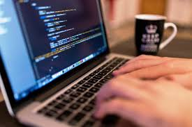
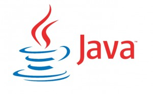
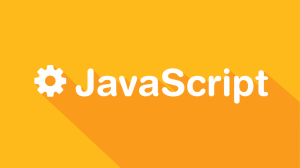
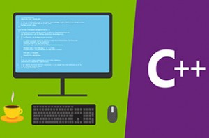
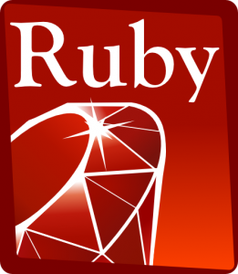

As 5 linguagens de programação mais requisitadas no mercado de trabalho
O mercado de trabalho está cada vez mais à procura de profissionais especializados em linguagens de programação. Devido ao crescente avanço tecnológico, a automação nas indústrias e a evolução da internet quase tudo possui um programa embutido para auxiliar nos processos, como em empresas, em escolas, em áreas de saúde e em dispositivos móveis.
Muitas pessoas ficam em dúvida de quais linguagens de programação devem aprender e estudar, mas isso depende do objetivo de cada um, pois algumas linguagens de programação são mais indicadas do que outras em certas circunstâncias.

Segundo ASSUMPÇÃO, TI e Telecom são os setores que mais contratam. O número de contratações para desenvolvimento de software cresce a cada dia e as médias salariais estão entre as maiores do mercado. Mas profissionais cada vez mais qualificados e exigências específicas de empresas podem afastar as pessoas das vagas tão sonhadas.
Confira as 5 linguagens de programação mais requisitadas no mercado de trabalho
1. JAVA

Java é uma das linguagens de programação mais usadas no mundo. É uma linguagem Orientada a Objetos de alto nível onde permite maior flexibilidade e portabilidade, além de ser segura e confiável. Essa linguagem foi feita na Sun MicroSystems, hoje Oracle Corporation, lançada em 1995 ele está em todos os luares, desde computadores, consoles de games, celulares, aplicativos para dispositivos móveis à internet.
2. JAVASCRIPT

A maioria das páginas da internet tem um código em javaScript. Essa linguagem é responsável por executar scripts do lado do cliente, sem a necessidade de passar pela interpretação do servidor. É uma linguagem orientada a objetos e utilizada para controlar o HTML e o CSS para manipular comportamentos na página permitindo maior interatividade com os usuários fazendo com que as páginas fiquem mais dinâmicas.
3. C++

O C++ é utilizado bastante no desenvolvimento de softwares para desktop. É o aprimoramento da linguagem C com elementos da orientação a objetos. É uma linguagem bem flexível, usada tanto em alto quanto baixo nível pois é uma linguagem de nível médio. É também uma linguagem multi-paradigma onde possibilita trabalhar com mais de um estilo de programação.
4. PYTHON

O Python é excelente para quem está começando nesta área. É uma linguagem simples, eficaz e de fácil aprendizado. Python é livre e de código aberto, uma linguagem dinâmica, multiplataforma, orientada a objetos, interpretada, robusta, multi-paradigma e de alto nível.
5. RUBY

O Ruby é uma linguagem simples de aprender, de fácil escrita, dinâmica e funcional com foco na produtividade e totalmente livre. É utilizado na internet através do framework Ruby on Rails, mas o Ruby pode ser usado para muitas outras coisas e a demanda por programadores de Ruby vem crescendo bastante nos últimos anos.
Essas são apenas 5 linguagens de programação mais requisitadas dentre muitas outras, cada uma com suas particularidades e métodos para programar. Lembrando que as pessoas devem saber o seu objetivo para assim escolher a linguagem mais apropriada.
Lista não ordenada
- PYTHON
- JAVASCRIPT
- C++
- RUBY
- JAVA
Lista Ordenada
- JAVA
- JAVASCRIPT
- C++
- PYTHON
- RUBY
| As 20 Linguagens de Programação mais utilizadas no Mundo |
| 1. JavaScript |
| 2. JavaScript |
| 3. Python |
| 4. PHP |
| 5. C# |
| 6. C++ |
| 7. CSS |
| 8. Ruby |
| 9. C |
| 10. Swift |
| 11. Objective-C |
| 12. Shell |
| 13. R |
| 14. TypeScript |
| 15. Scala |
| 16. GO |
| 17. PowerSheel |
| 18. Perl |
| 19. Haskell |
| 20. Lua |